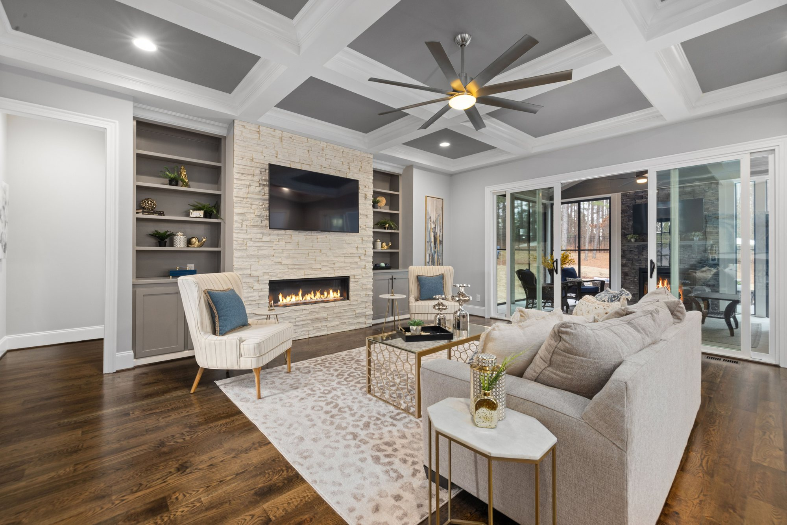
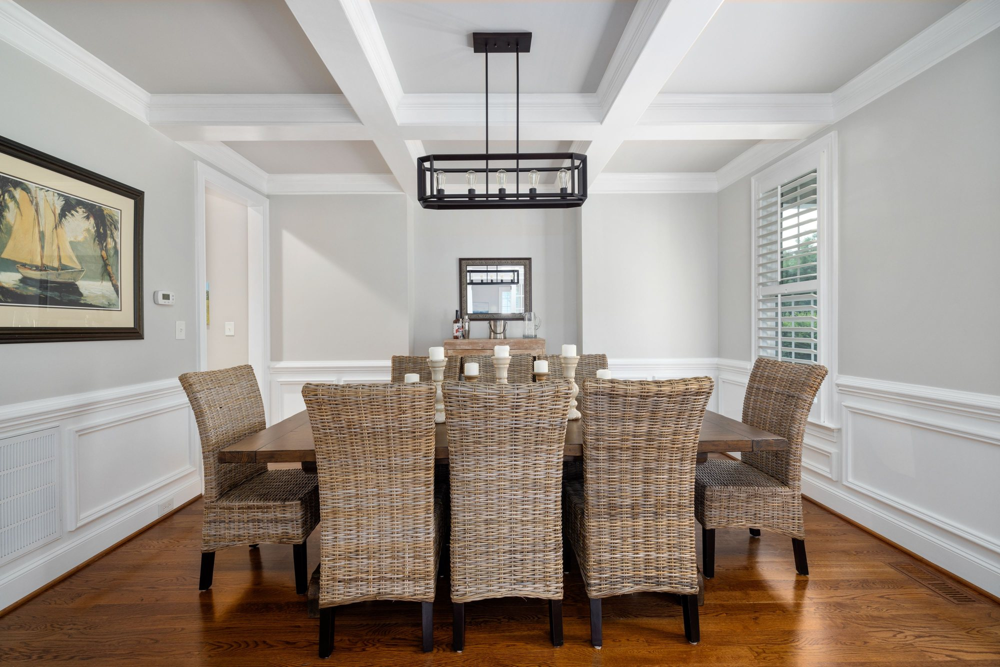
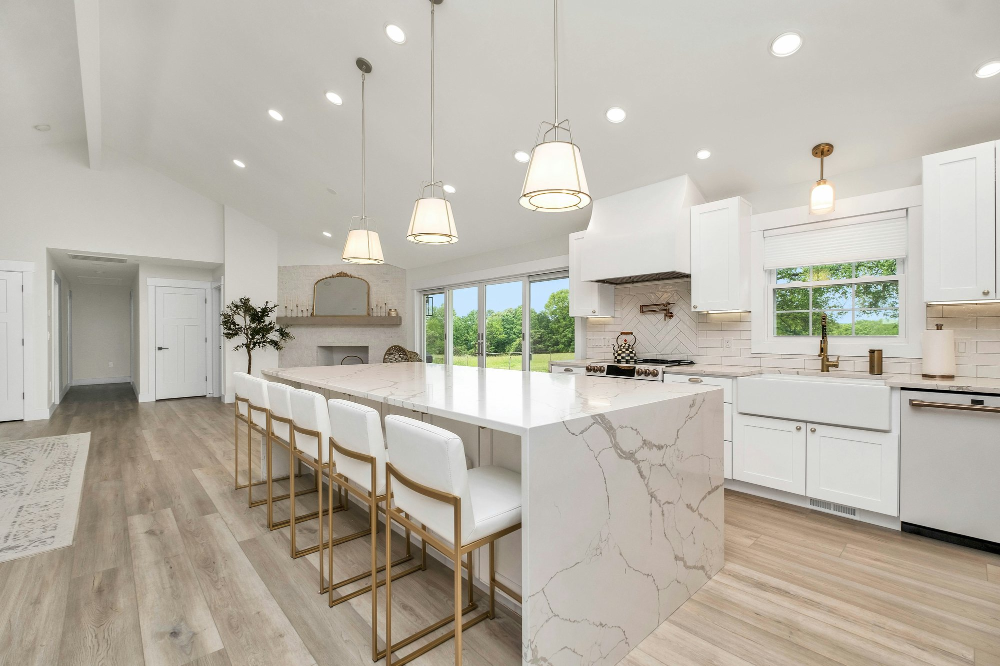
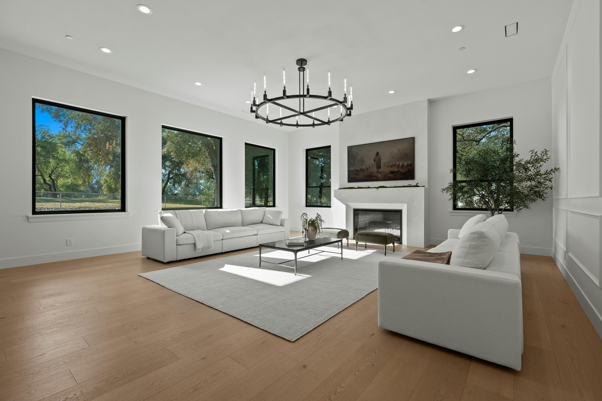
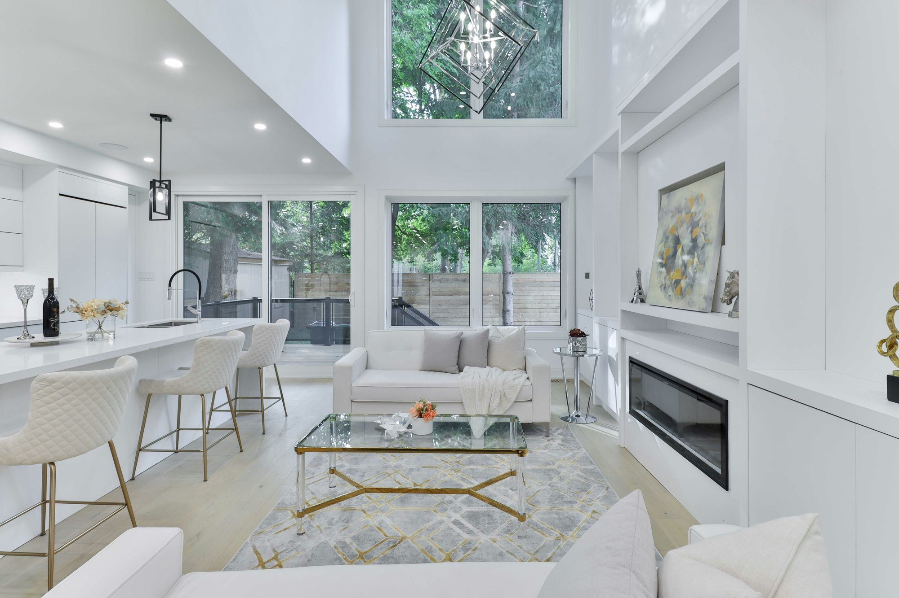
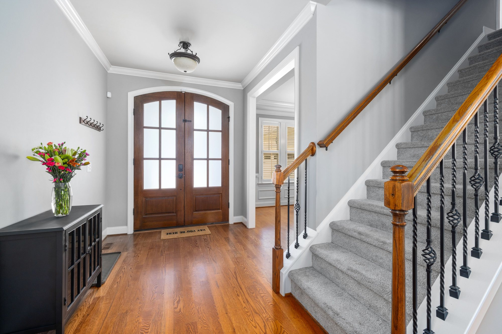
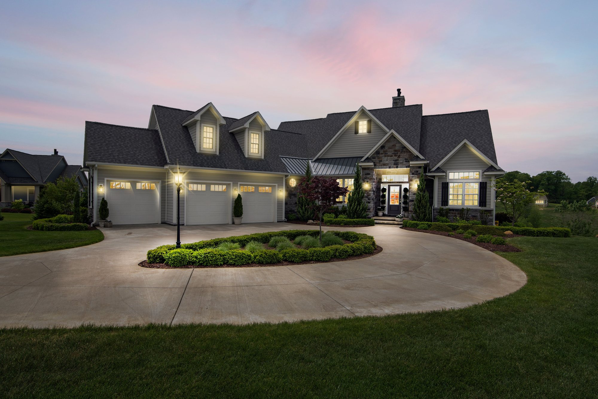
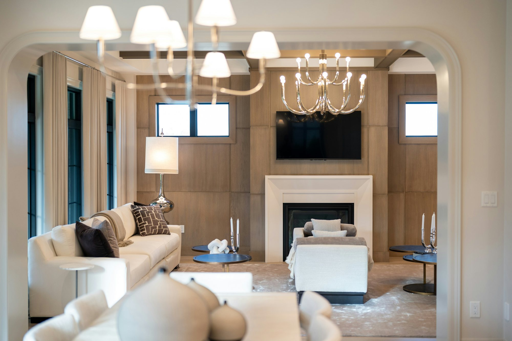

Seller’s Guide
A Home Seller Guide for North Metro Atlanta
Eight steps from the first conversation to closing day.
How it works
A Plan for Every Step of Your Sale
A strong sale starts long before the sign goes up.
Here is how Sarah takes sellers from pricing to closing, and where each decision is yours to make.

Step 1 of 8
Start with Your Goals and Timing
What you need from the sale shapes everything else: price, timing, and whether you are buying next. Sarah walks through it with you before anything else.

Step 2 of 8
Price It from the Market
Sarah prepares a comparative market analysis from recent nearby sales and the homes you will compete with, then recommends a list price. You can start with an instant estimate.

Step 3 of 8
Prepare the Home
Declutter, finish small repairs and deep clean. Sarah will tell you which updates are worth doing before you list, and which are not.

Step 4 of 8
Photography and Marketing
Professional photography, the MLS, CENTURY 21’s own sites and outreach to agents and buyers. Luxury listings also go out through CENTURY 21 Fine Homes & Estates.

Step 5 of 8
Showings
Sarah schedules showings and open houses, gathers feedback after each one and keeps you posted on interest.

Step 6 of 8
Review Offers
Price is one term of several: earnest money, financing, the due diligence period and the closing date all matter. Sarah lays offers side by side and negotiates for you.

Step 7 of 8
Due Diligence and Repairs
The buyer inspects during due diligence and may ask for repairs or a price change. Sarah handles the negotiation and keeps the deal on schedule.

Step 8 of 8
Closing
A closing attorney prepares the deed and the settlement statement. You sign, the deed transfers and the proceeds are paid out.

Home value
Start with an Instant Estimate
See a likely value and range for your home in seconds, then ask Sarah for her full analysis.
Questions
Seller Questions
How do you decide on a list price?
From a comparative market analysis: recent sales of similar homes nearby, the homes on the market now, and your home's condition and features.
Should I renovate before I sell?
Usually not much. Small repairs, paint and a deep clean pay off more often than big projects. Sarah will tell you what buyers in your area expect.
How long will it take to sell?
It depends on price, condition, location and season. Sarah will give you a realistic timeline based on current activity near you.
What happens after I accept an offer?
The buyer's due diligence period begins, then the appraisal and the buyer's loan approval, then closing with a closing attorney.
Do I need an attorney?
Georgia closings are conducted by a closing attorney, so one is part of every sale.
Can I sell and buy at the same time?
Yes. Sarah can time both, using contract dates to line up the sale and the purchase.
Resources
Seller Resources
Let's Talk
Thinking About Selling?
Tell Sarah about your home and your timing, and she will put together a plan and a price.